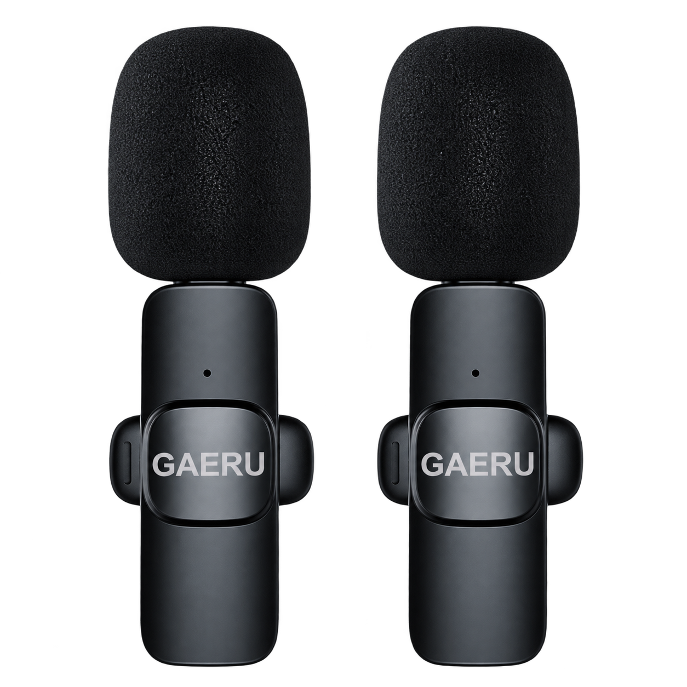

Không dây, không vướng
Di chuyển tự nhiên khi quay video hoặc trình bày trước máy quay. Khoảng cách kết nối lên đến 20 m trong điều kiện không có vật cản; khoảng cách thực tế tùy môi trường sử dụng.
MIC KHÔNG DÂY
Từ video đầu tiên đến buổi livestream tiếp theo. Một chiếc mic nhỏ, cho những câu chuyện đáng được nghe.
Chọn GAERU K9 ›
NHỎ GỌN ĐỂ BẮT ĐẦU
Di chuyển tự nhiên khi quay video hoặc trình bày trước máy quay. Khoảng cách kết nối lên đến 20 m trong điều kiện không có vật cản; khoảng cách thực tế tùy môi trường sử dụng.
Giúp bạn tập trung vào giọng nói. Hiệu quả phụ thuộc môi trường, vị trí mic và mức độ ồn thực tế.
Chọn đúng cổng và kiểm tra ứng dụng nhận mic trước khi ghi hình. Không cần kết nối Bluetooth.
Đặt mic cách miệng khoảng 10–20 cm; điều chỉnh vị trí phù hợp với cường độ giọng nói.
NGHE SỰ KHÁC BIỆT
Hai bản ghi từ trang GAERU K9. Chất lượng thu âm phụ thuộc thiết bị, vị trí mic và môi trường sử dụng.
GAERU TRONG CUỘC SỐNG CỦA BẠN
| Nhu cầu | Mic điện thoại | GAERU K9 | Mic chuyên nghiệp |
|---|---|---|---|
| Chuẩn bị | Có sẵn trên máy | Mic và đầu thu | Tùy bộ thiết bị |
| Vị trí thu | Theo điện thoại | Cài áo gần người nói | Theo hệ thống |
| Phù hợp | Ghi nhanh, quay gần | Video, livestream, phỏng vấn | Sản xuất có yêu cầu cao |
GIẢI ĐÁP NHANH
Chọn theo cổng thực tế trên thiết bị. Kiểm tra hỗ trợ USB audio/OTG và khả năng nhận micro ngoài của đúng điện thoại, ứng dụng trước khi chọn.
Không cần kết nối Bluetooth. Cắm đầu thu, bật mic và kiểm tra tín hiệu trước khi mở ứng dụng quay. Khả năng nhận mic ngoài phụ thuộc điện thoại và ứng dụng.
Theo thông tin trên trang GAERU K9, thời lượng sử dụng khoảng 2 giờ, khoảng cách khoảng 15–20 m khi không có vật cản. Kết quả thực tế thay đổi theo điều kiện sử dụng.
Dùng nguồn và cáp theo hướng dẫn đi kèm, giữ mic khô ráo, tránh va đập và ghi thử sau khi sạc. Kiểm tra tương thích trước khi dùng bộ chuyển đổi.
Nội dung và bản ghi tham khảo từ trang GAERU K9. Giá và phiên bản được lấy tại cửa hàng hiện tại.
CÂU CHUYỆN TIẾP THEO BẮT ĐẦU TỪ BẠN